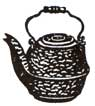
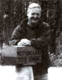

Country Lore
Mildred Baughman carries leaf mold and soil from the nearby woods to create a fertile growing environment; A.M. Rader puts a rubber crutch tip over his hammer head so as not to dent wood; Raymond Wilcox uses stair runners to cover his wood pile; Pete Peterson built a mill so he could construct his log cabin; Eileen Janigo places kindling in a paper bag and lights it to start fires; Ann Hourdequin uses sauerkraut to clean the insides of porcelain teapots; Jack Kiser checks musical greeting cards and recycles their batteries in his watch; R.C.W. Davis shares a recipe for homemade peanut butter; Andrew Guskea protects knife blades with hosing; Ross Westergaard uses freezer packs to keep the refrigerator cool; Lorna Ternyila rubs her hands in vegetable oil before washing to remove oil and grime; Mikki Smith shares recipes for wet wipes and pet shampoo; Theresa Thompson puts a cough drop in tea to clear her head when sick; Ken Dillard boils persimmon twigs to treat poison ivy; Cheryl Miller stretches hat bills over pots to keep their shape; James Richards sharpens knives with tool steel; Carmen Wright uses a mild tea to clean hardwood floors; Renee Shermen pinches her upper lip to relieve leg cramps; Nita Brainard soaks clothes in cold saltwater to remove the game smell after hunting; Jeff Mullin uses ashes to clean stove glass doors; Claudia Morgan recommends not heating PVC pipe; Janelle Myers suggests leaving a window cracked when burning candles in a snowbound car; Kelly Bastin tells that windshield washer fluid has toxins that are harmful for pets and humans and should not be used as household cleaner.
By Mother Earth News readers
August/September 1991
Backpack Gardening
How can anyone have a successful garden at an altitude of 7,000 feet on a small mobile home lot, especially when the topsoil has been scooped off by the developer? We did it by backpacking rich leaf mold and soil in from nearby woods.
We live on the edge of a pine forest that has clumps of oak trees interspersed among ponderosa pines. The fallen leaves in these oak groves cover a layer of leaf mold, and under that is rich, loamy soil.
We already had the backpack frames from occasional hiking trips. My husband strapped large plastic buckets to the frames so we can each haul 20 or 30 pounds down to our garden bed each trip. (Of course, we are careful not to gather too much from any one spot.) The leaf mold mixed with the original clay has quickly built up our garden soil. Too much work, you say? Well, for a couple of retirees, it's more fun than work. It gives us the exercise we need, and we enjoy the beauty of our woods.
-Mildred Baughman
Apache Junction, Arizona
Hammer Tip
If you are planning to do some upholstering this winter, put a rubber crutch tip or chairleg tip over the head of your hammer. This will save the beauty of your upholstery tacks, and if you happen to miss the mark, the wood won't be damaged
-A.M. Rader
Wichita, Kansas
Fancy Firewood
To cover my woodpile for free, I simply go to the carpet shop and pick up some old stair runners. They don't blow off like plastic tarps and the price is certainly right.
-Raymond G. Wilcox
Torrington, Connecticut
For Want of a House, a Mill Was Built
I wanted to build a log house, but a wall kit alone would cost about $8,000-more than I could afford. I knew that on my woodland I had enough tulip poplar for the wall logs and enough pine for the framing. The problem was getting the logs flat on two sides and cutting the pine into lumber. I decided to build a sawmill.
In a salvage yard, I spotted a framework of angle iron in the shape of a box. I bought it for $5, along with two Volkswagen wheels with spindles, bearings, and brake discs. These became the major components of the mill.
I opened up the bottom of the angle iron box so the mill could pass over the logs, and put wheels on the legs. The result was a framework in the shape of a small gantry crane. The wheels run on tracks made from an old aluminum extension ladder and have a flange on one side to keep them on.the tracks. The tracks are mounted on pressure-treated 4 X 4s, and another set of 4 X 4s outside of each rail helps keep the mill on the tracks.
The hand blade runs on the Volkswa gen wheels, which I mounted on the top of the frame. I welded a pulley from an old air compressor to one of the brake discs to act as a drive wheel. For blade guides, I bolted roller bearings to a plate attached to the frame below the wheels, which can be adjusted to keep tension on the blade. The weight of the two wheels made the mill top-heavy, so I put cement blocks on the frame for counterweights.
The mill is powered with a'10-HP engine and V-belts that turn on a jack to maintain the speed required to make even cuts. I bought my blade from the Buckeye Saw Blade Company (4930 Provident Dr., P .O. Box 46857, Cincinnati, OH 45214). Mine is 149 inches long with a tooth spacing of .750 but they will make blades to any length. I know a man who bought a commercial mill for $6,0W. My homemade mill, with a new engine, cost about $3(10.
-;Fete Peterson
Rock Tennessee
During the woodburning season, try this surefire idea. Place enough kindling wood to start a fire in a paper grocery bag. Also include crumpled newspaper and torn cartons. Punch a hole in the bag for draft purposes, and place under logs in the fireplace. Now the fun part: Simply light the bag. Last year I prepared more than a hundred sacks and stacked them in our garage and basement. Save those bags!
-Eileen Janigo
Hatley Wisconsin
Sauerkraut Tea
I nearly threw away a little porcelain teapot because the spout, which was stained coal black, was too small to clean inside. Then a friend from Germany told me to fill the pot with sauerkraut and leave it closed for a couple of days. Lo and behold, at the end of two days I removed the top to reveal a perfectly clean, snow white interior, as good as brand new!
-Ann Hourdequin
Athens, Georgia
The Gift That Keeps On Giving
If the battery in your wristwatch needs replacing and you happen to have one of those musical greeting cards lying around the house, check the battery in the card. I did, and found it contained an exact replacement for my Timex watch. It has been running for two years now.
Jack Kiser
Fremont, Ohio
Do it Yourself Peanut Butter
The last time the peanut butter monopoly boosted prices by the simple expedient of reducing jar size by a third, I said, "Enough is enough is too much!"
I bought two pounds of raw, shucked, skinless peanuts at the produce market, roasted them (in a frying pan at low heat), sprinkled the roasted nuts liberally with soy sauce (it imparts a richer flavor than plain salt), and ran them through an ordinary hand-turned meat grinder. The result was a greasy, grainy mass. To this I added olive oil and stirred, and kept adding the oil and stirring until it achieved the consistency of store-bought peanut butter.
With those two pounds of nuts, purchased for less than $2,1 produced ajar and a third of butter. You can further reduce the cost by substituting any cooking oil or even room-temperature margarine for olive oil.
Another great benefit of this do-it-yourself butter is that to the peanuts you can add shelled sunflower or pumpkin seeds, other kinds of nuts, whole grains, shredded coconut-almost anything nutritious and delicious will do.
If raw, skinless peanuts are unavailable in your locality, use the skins-on variety. The product will be slightly darker than store bought butter, but its taste and nutritional quality won't suffer.
A minor disadvantage of homemade butter is that, not being homogenized, the oil tends to rise to the surface and you'll need to stir it back into the contents of the jar before serving.
But all in all, thank you, peanut butter Moguls, for making me a thinking and imaginative consumer!
-R.C.W. Davis
Zapopan, Mexico
Sheath That Blade
I recently discovered an inexpensive and easy way to protect a bucksaw blade and keep it safe: Make a cover out a scrap piece of reinforced hosing. First cut the hose to the length of the blade and then split it lengthwise. It will wrap right around the teeth and help keep them sharp..
- Andrew Guskea, Jr
Corry, Pennsylvania
Cool Savings
Living on an island, we find it essential to take coolers with freeze packs when we grocery shop, because of the long trip home. As a result, we always have several freeze packs in our freezer.An increase in electricity rates inspired me to use the freeze packs to help our refrigerator. I place a frozen pack in the top of the refrigerator, and the next day after it partially thaws I exchange it for a frozen one, returning the old pack to the freezer.
Our fridge motor runs less frequently, and we appear to be saving a small but regular amount of electricity.
-Ross Westergaard
Denman Island, British Columbia
Grease Relief
To remove the greasy oil and grime from your hands after working on your tractor or car, rub your hands in vegetable oil before washing them in soap and water. It costs much less than commercial hand cleaners, and I've found it even gets the grease out from under my fingernails.
-Loma Ternyila
Waldport, Oregon
Naturally Clean
These all natural "wet wipes" are indispensable for quick cleanups. When stored in an airtight container (a small plastic-lidded coffee can works perfectly), they remain moist, ever-ready and conveniently packable. Simply use...
A homemade product that cleans your house without soiling our Natural Home.
I cup rainwater 1/4 cup antiseptic mouthwash (or ethyl rubbing alcohol or vodka) 2 tsps. glycerin 12 drops lemon oil Combine all of the ingredients in a small bowl and mix well. Fold soft paper towels into squares and soak them with the mixture (the cleaner listed above will saturate approximately 125 towels). Then stack the wet towels into the airtight container and cover tightly. You can discard the leftover mixture or use it to saturate a few more paper towels.
You can also make a chemical-free nonirritating, pleasant-smelling, insect repelling pet shampoo for a fraction of the price of shampoos available in stores. It is perfectly fine for people to use as well, especially when camping or fishing, when the insect-repelling qualities are really appreciated. You'll need:
2 cups of rainwater (boil the water beforehand because you're going to use it topically)
3/4 cup Murphy's Oil Soap 2 Tbs. glycerin
2 Tbs. Listerine mouth wash (rubbing alcohol or vodka work well with this mixture too)
5 drops each of cedar and citrinella oil (optional to repel fleas, ticks and mites)
Add rainwater to liquid soap and heat on low until well mixed. Add the glycerin and mouthwash (or alcohol) and stir. Then add the oils, blend again and store in a tightly capped bottle. When shampooing pets, remember to start at the head. When you start on the back or hind quarters any insects that are present will instinctively search for safer surroundings, and it's best to discourage them from getting near your pets' sensitive eyes and ears. So start with the ears and work back.
-Mikki Smith
Lexington, Michigan
Country Cures
If you have a head cold, put a mentholated cough drop in lemon or herbal tea. It helps clear your head and sooth your throat.
-Theresa Thompson
Madison, Wisconsin
Remove a few twigs from a persimmon tree, cover them with water, and boil for 20 minutes. Strain and cool the liquid. Applied on a poison ivy or poison oak rash, it will stop the itch immediately, and after a few applications will dry the rash.
- Ken Dillard
Gray Court, South Carolina
CapSavers
Ever notice how billed caps tend to lose their shape when washed? After I wash mine, I stretch it around the bottom of a pot that fits the hat. The caps take back their form just like new.
-Cheryl Miller
Mount Horeb, Wisconsin
Hone Steel
When I was working as a machinist trainee, I found that tool steel is really handy for putting an edge on kitchen knives. It's strength and hardness are perfect for the job. Now I keep a piece in the silverware drawer. When a knife becomes dull, a couple of licks with the tool steel gets it sharp and ready to use.
-James Richards
Charleston, West Virginia
Clean to a Tea
Boil several old tea bags to get a mild tea solution. Let it cool to lukewarm, remove the bags, and use the liquid to scrub your woodwork and hardwood floors. The solution dries quickly and leaves no residue. It not only deep cleans the wood but also prepares it for waxing or polishing.
-Carmen Wright
Mayport, Pennsylvania
Just a Pinch
I have a great remedy for immediately relieving leg cramps. Pinch your upper lip just below your nose and the cramp will disappear. Believe me, it works!
-Renee Shermen
Granite Falls, Minnesota
Get the Red Out
To remove the gamey smell and bloodstains from hunting or butchering clothes, soak them in cold saltwater. It should do the trick.
-Nita Brainard
Grangeville, Idaho
Send tips to: "Country Lore, " MOTHER EARTH NEWS,PO. Box 129, Arden, NC 28704. If you'd like our readers to get to know you, tell us something about yourself (age, occupation, etc.). If you have a photo of yourself, go ahead and send it to us.
We'll try to make you famous!
Letters About Lore
Woodstove Glue, Take Two
I agree with Rebekah Kos of Aumsville, Oregon [issue 121]: Cleaning a wood stove's glass doors can be a chore. Glass cleaner didn't help, and oven cleaner burned my hands and attacked the stove's cast iron. Instead, I take a damp pacer towel, dab it in the finest fireplace ash and rub it on the glass. The soot and creosote will come off quickly and easily.
-Jeff Mullin
West Chester, Ohio
Don't Hit PVC
Please be aware that the solution for repairing garden hoses [issue 125] that calls for heating PVC pipe with a propane torch can be extremely dangerous, even lethal. I recall reading an article about a youth who constructed a tobacco pipe out of a section of PVC and died after applying a match to the bowl and inhaling. That was a match, not a propane torch. Spare yourself; purchase a new hose or find another way to repair the one you have.
-Claudia Morgan
Providence, Rhode Island
Of Candles, Candy, and Cars
After living in Alaska for 111 years, l thought the advice to burn candles in a snowbound car [issue 121 1 was common knowledge. What Sandy Beadle failed to mention is that you need to crack the window a bit to keep the candle from depleting the oxygen in the car. Wet snow or freezing rain can seal vents and make a car airtight It's also a good idea to keep a can of nuts, some jerky, or granola bars in the car for those unexpected delays. This is especially important if you are diabetic or hypoglycemic.
-Janelle Myers
Irvine, Kentucky
Wiper Fluid No-No
I would advise people not to use windshield washer fluid for household use [issue 121). The fluid contains antifreeze and other toxins that can be very harmful to humans and pets The savings are not worth the risks. Instead, try using vinegar and water for window cleaning.
-Kelly Bastin
Paragon, Indiana
 |
 |
 |
|
|
|
|